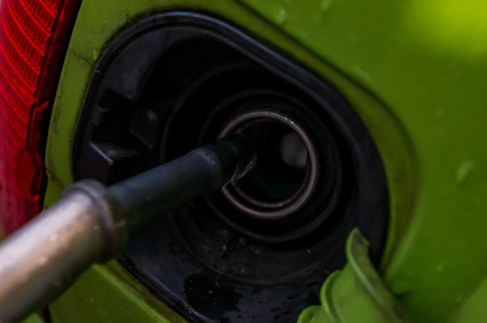

Como economizar combustível no dia a dia (sem mudar sua rotina drasticamente)

Com o preço dos combustíveis pesando no bolso, economizar virou necessidade, não luxo. Muita gente acredita que só dá para reduzir gastos deixando o carro na garagem, mas a realidade é outra.
Com pequenas mudanças no dia a dia, é possível diminuir bastante quanto gasto de gasolina por dia sem abrir mão da praticidade do carro. E tudo começa entendendo melhor o seu consumo médio de carro por km.
Neste guia, você vai aprender estratégias simples, práticas e que realmente funcionam para gastar menos combustível todos os dias.
Entenda quanto você gasta hoje
Antes de economizar, você precisa saber exatamente quanto gasto de gasolina por dia.
Se ainda não sabe como calcular, veja nosso guia para calcular o gasto de combustível por km.
Muita gente subestima esse valor porque olha apenas o abastecimento cheio, e não o impacto diário.
Exemplo simples
- Você gasta R$ 180 de combustível
- Esse valor dura 6 dias
Resultado: R$ 180 ÷ 6 = R$ 30 por dia
Agora multiplique por 22 dias úteis: R$ 30 × 22 = R$ 660 por mês
Percebe o impacto? Entender quanto gasto de gasolina por dia é o primeiro passo para identificar onde dá para economizar.
Se quiser agilizar essa conta, use a calculadora de gasto com combustível.
Consumo médio de carro por km: o indicador que muda tudo
O seu consumo médio de carro por km é o principal fator que define o quanto você gasta. Ele mostra quantos quilômetros seu carro percorre com 1 litro de combustível.
Quer saber quais modelos são referência em economia? Veja quais carros gastam menos combustível.
Referência de consumo
- 12 a 15 km/l: bom consumo
- 9 a 12 km/l: consumo médio
- Abaixo de 9 km/l: consumo alto
Quanto melhor o consumo médio de carro por km, menor será seu gasto diário. Melhorar esse número, mesmo que pouco, já faz diferença no bolso.
Dirija de forma mais econômica
Seu jeito de dirigir impacta diretamente quanto gasto de gasolina por dia.
Evite acelerações bruscas
Arrancadas fortes fazem o motor consumir mais combustível.
Mantenha velocidade constante
Dirigir de forma estável melhora o consumo médio de carro por km.
Antecipe frenagens
Evite frear de última hora. Isso reduz o desperdício de energia.
Pequenas mudanças na direção podem reduzir o consumo em até 20%.
Cuide da manutenção do carro
Um carro desregulado consome muito mais combustível. Se o seu consumo médio de carro por km piorou sem motivo aparente, pode ser sinal de problema.
Itens que impactam diretamente
- Filtros sujos
- Velas desgastadas
- Óleo vencido
- Injeção desregulada
Manter o carro em dia ajuda a reduzir quanto gasto de gasolina por dia sem esforço extra.
Os Grandes Vilões Silenciosos do Consumo
Muitas vezes, a forma como usamos certos componentes do carro anula o esforço de manter o pé leve. Veja a ciência por trás de cada um deles:
1. Vidros Abertos vs. Ar-Condicionado (O ponto de virada)
O ar-condicionado consome energia mecânica do motor, o que aumenta o gasto em cerca de 10% a 15%. No entanto, andar com os vidros abertos destrói a aerodinâmica do veículo. A regra de ouro é:
- Na cidade (até 70 km/h): Andar com os vidros abertos é mais vantajoso, pois a resistência do ar é baixa e desligar o ar-condicionado gera economia real.
- Na estrada (acima de 70 km/h): Feche os vidros e use o ar-condicionado. A turbulência criada pelos vidros abertos exige mais esforço do motor do que o próprio ar-condicionado ligado.
2. O "Mito da Banguela" (Ponto morto em descidas)
Ant antigamente, em carros carburados, descer ladeiras em ponto morto (neutro) economizava combustível. Nos carros modernos com injeção eletrônica, **isso é um erro grave e perigoso**:
- Engrenado e sem acelerar: A injeção eletrônica reconhece que o carro está se movendo pela própria inércia (sistema Cut-Off) e corta totalmente a injeção de combustível (consumo zero).
- Em ponto morto (Neutro): O sistema injeta combustível para manter o motor funcionando em marcha lenta (cerca de 900 RPM), gastando combustível desnecessariamente, além de perder a segurança do freio-motor.
3. Calibragem dos Pneus e o Custo do Atrito
Rodar com pneus murchos (mesmo que apenas 4 PSI abaixo do recomendado) aumenta a área de contato com o solo e eleva a resistência ao rolamento. Isso obriga o motor a fazer mais força.
- Impacto no bolso: Pneus descalibrados aumentam o consumo de combustível em até 3% a 4%.
- Recomendação: Calibre os pneus frios (rodando menos de 2 km até o posto) a cada 15 dias, seguindo a pressão recomendada no manual ou na etiqueta da porta do motorista.
4. Peso Extra no Porta-Malas (O peso morto)
Cada 40 kg a 50 kg de peso extra no carro aumenta o consumo em aproximadamente 1% a 2%. Carregar malas antigas, ferramentas desnecessárias ou caixas no porta-malas funciona como uma âncora invisível no seu orçamento de gasolina.
Tabela Prática de Impacto no Consumo
Veja o quanto cada hábito ou desregulagem pode encarecer a sua conta mensal de combustível:
| Fator / Problema | Aumento Médio no Consumo | Custo Adicional Mensal (Ref: R$ 500/mês) |
|---|---|---|
| Pneus com calibragem baixa (murchos) | 3% a 4% | + R$ 15,00 a R$ 20,00 |
| Ar-condicionado ligado na cidade | 10% a 15% | + R$ 50,00 a R$ 75,00 |
| Porta-malas com 50 kg de peso inútil | 2% | + R$ 10,00 |
| Velas de ignição desgastadas / filtros sujos | 10% a 20% | + R$ 50,00 a R$ 100,00 |
| Condução agressiva (arrancadas rápidas) | 15% a 30% | + R$ 75,00 a R$ 150,00 |
Pequenas mudanças, grande impacto
Muita gente acha que economizar combustível exige grandes sacrifícios. Na prática, pequenas ações já fazem diferença:
- Dirigir melhor
- Manter o carro em dia
- Planejar rotas
- Reduzir peso
Tudo isso melhora o consumo médio de carro por km e reduz significativamente quanto gasto de gasolina por dia.
Conclusão
Economizar combustível no dia a dia não é complicado, mas exige consciência.
Quando você entende seu consumo médio de carro por km e acompanha quanto gasto de gasolina por dia, começa a enxergar oportunidades reais de economia.
E o melhor: sem precisar abrir mão do carro.
No fim, não é sobre dirigir menos. É sobre dirigir melhor e gastar menos em cada quilômetro.